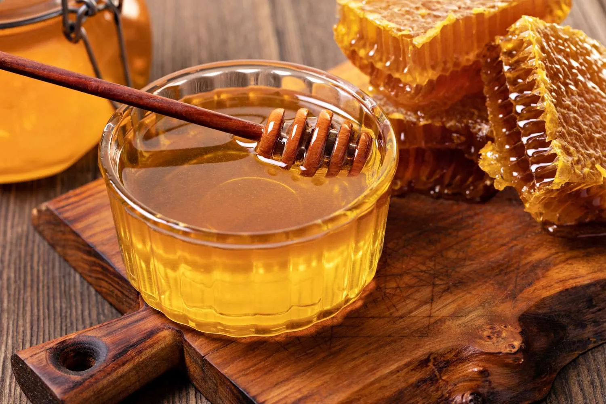

Producto 1: Miel de Abeja Natural
La miel de abeja natural es una fuente de energía natural, rica en nutrientes y antioxidantes. Es perfecta para endulzar tus comidas y bebidas favoritas de manera saludable.

Producto 2: Polen Apícola
El polen apícola es un superalimento lleno de vitaminas, minerales y aminoácidos. Es ideal para mejorar el rendimiento deportivo, aumentar la energía y fortalecer el sistema inmunológico.
Producto 3: Trajes Apícolas
Nuestros trajes apícolas ofrecen protección y comodidad para los apicultores durante sus tareas en la colmena. Fabricados con materiales de alta calidad, garantizamos su durabilidad y resistencia a las abejas.